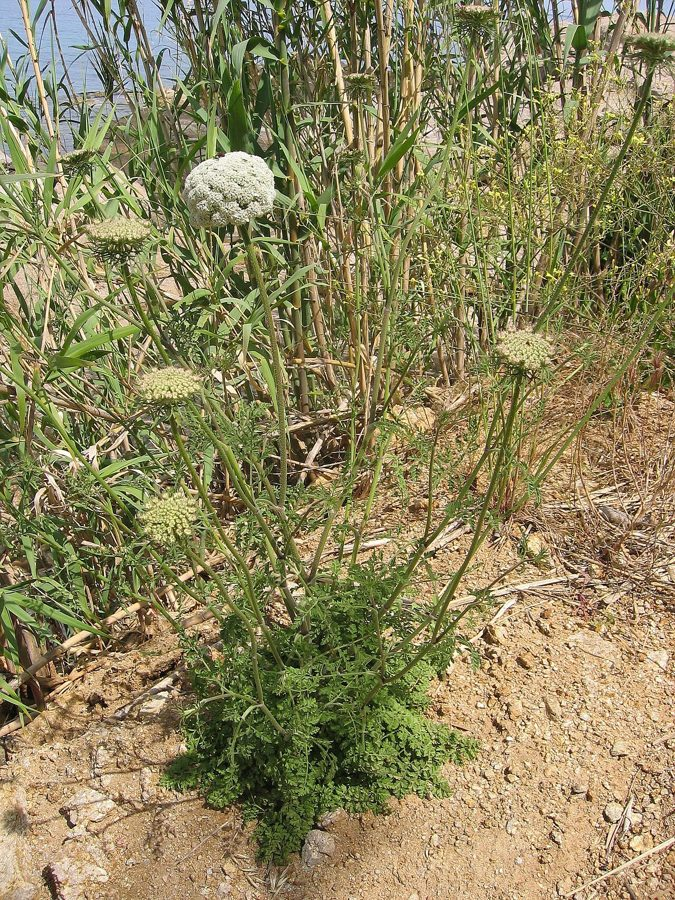

गाजरCarrot
Daucus carota · Apiaceae · FLR-0391

- Scientific name वैज्ञानिक नाम
- Daucus carota L.
- Family कुल
- Apiaceae
- Hindi हिंदी
- गाजर
- Local names स्थानीय नाम
- gajar, gajra, carrot
- Status here यहाँ की स्थिति
- cultivated
- Movement आवागमन
- Resident, here all year
- Known from कहाँ दर्ज
- Others have published records from the wider Awadh–Purvanchal plain, none yet from Basti–Ayodhya अवध–पूर्वांचल से दूसरों के प्रकाशित अभिलेख, बस्ती–अयोध्या से अभी नहीं
- IUCN IUCN
- LC
- Review समीक्षा
- not yet reviewed
When to look कब देखें
Present all year. साल भर मौजूद।
Uses and possibilities उपयोग और संभावनाएँ
“Traditional medicine” means a documented traditional use, not a claim that it works. Nothing on this page is medical advice.
Drawn from the documented uses in the profile below, where each is labelled traditional, current or a research lead. All uses →
Tell it apart from इनसे अलग पहचानें
गाजर / Carrot
Daucus carota L. — Apiaceae
गाजर — अवध और पूर्वांचल के खेतों में शीतकाल में उगाई जाने वाली एक प्रमुख जड़ की फसल है। इसके मीठे, लाल या नारंगी कंद और बारीक कटे हुए पंखनुमा पत्ते इसे तुरंत पहचान दिलाते हैं। इसके छतरीनुमा सफेद फूल बसंत में मधुमक्खियों से भरे रहते हैं।
Quick Identification त्वरित पहचान
| Feature | Description |
|---|---|
| Habit | Biennial or annual hispid herb grown for its swollen edible storage taproot |
| Foliage | Feathery, tripinnate leaves with finely divided, narrow-lanceolate segments |
| Root | Fleshy conical or cylindrical taproot, orange, deep red, or yellowish-white |
| Inflorescence | Terminal compound umbel that becomes concave and bird-nest-like in fruit |
| Flowers | Small, white or cream-colored, with a central dark red or purple sterile floret |
| Fruit | Oblong schizocarp (cremocarp) covered with bristly hooked spines along ribs |
Field tip: Look for clumps of delicate, fern-like, finely dissected foliage rising from garden ridges. Crushing the leaves releases a distinctive herbaceous carrot aroma. Uprooting exposes the conical, reddish-orange taproot. In bolting plants, the dense white umbels cup inward into a concave nest as seeds ripen.
हिंदी:
धनिया जैसे बारीक कटे हुए पंखनुमा पत्ते जमीन के ऊपर घने गुच्छे में रहते हैं।
जमीन के नीचे लाल, नारंगी या काली लंबी मोटी जड़ बैठती है।
बसंत में तने पर सफेद फूलों की छतरी खिलती है, जो सूखने पर चिड़िया के घोंसले जैसी मुड़ जाती है।
Morphology आकारिकी
Measurement not available in consulted sources. Carrot is an erect, biennial herb, cultivated throughout northern India as a winter annual for its nutritious subterranean taproot. The vegetative phase produces a dense crown of radical leaves. The leaves are alternate and multipinnately divided, possessing slender, sheathing petioles. The leaf blades are tripinnate or pinnatifid, dissected into numerous narrow, linear-lanceolate, acute ultimate segments that give the canopy a delicate, feathery appearance. Both stems and petioles are hispid or scabrid, clothed with stiff, spreading whitish hairs.
The underground storage organ represents a modified taproot and hypocotyl axis. In traditional cultivars across northern India, the root is conical or elongated, tapering gradually toward the base. The epidermal skin and core range in coloration from deep crimson-red and dark purple in traditional Asiatic landraces to bright orange in introduced temperate cultivars. The internal tissue consists of a succulent outer cortex (phloem parenchyma) surrounding a central woody or fleshy stele.
During floral transition, the central apical meristem bolts into a hollow, striate, hispid flowering stalk that branches repeatedly. The inflorescence is a large, dense, terminal compound umbel supported by numerous pinnatisect involucral bracts. The outer rays of the umbel are long and spreading in flower, but curve tightly inward as fruits mature, giving the entire fruiting umbel a hollow, bird-nest appearance.
Individual flowers are small, pedicellate, and predominantly bisexual, though staminate flowers frequently occur on peripheral umbellules. The calyx teeth are obsolete or minute. The five petals are obovate with an inflexed apex, glistening white or faintly yellowish; frequently, the solitary floret at the very center of the primary umbel is sterile and colored dark purple or reddish-brown. The stamens are five and alternate with the petals. The inferior ovary is bicarpellary, maturing into an oblong, compressed cremocarp composed of two mericarps. Each mericarp features primary ribs bearing bristly hairs and prominent secondary ribs lined with stiff, glistening white, hooked spines.
हिंदी: इसके पत्ते पंख जैसे बारीक कटे होते हैं और तने पर बारीक रोएं होते हैं। जमीन के नीचे लाल या नारंगी मीठी जड़ बैठती है और तने पर सफेद फूलों की छतरी खिलती है।
Behaviour & Ecology व्यवहार एवं पारिस्थितिकी
Daucus carota behaves as a winter crop requiring cool temperatures for optimal root development and subsequent reproductive transition. The species exhibits strong protandry within individual florets, a mechanism ensuring that pollen is shed and dispersed before the stigma becomes receptive, thus preventing self-pollination within the same flower.
The broad, flat, landing-platform structure of the compound umbels offers readily accessible nectar and pollen to an unusually broad spectrum of generalist insect visitors. Nectar is secreted by a prominent stylopodium situated atop the ovary. During warm February and March afternoons, carrot umbels hum with activity from halictid bees, honeybees, syrphid flies, muscid flies, sphecid wasps, and small beetles.
In the soil profile, the vigorous taproot penetrates deep into the alluvial strata, drawing moisture from deeper soil layers while leaving subterranean channels as fibrous lateral rootlets decompose post-harvest. The dense foliage canopy effectively shades the furrow surface, conserving ground moisture in vegetable polycultures.
हिंदी: छतरीनुमा सफेद फूल मधुमक्खियों और मक्खियों को भरपूर मकरंद देते हैं। गहरी जड़ें जमीन से पोषक तत्व खींचती हैं।
Cultivation Calendar खेती का कैलेंडर
According to Duthie & Fuller (1893, Part III, pp. 9–10), the carrot crop is generally sown in September or October, and the roots become ready for use within a few months, lasting through the winter. A loamy soil is preferable. As a hardy and prolific crop, it served as an invaluable emergency food in seasons of drought and scarcity.
हिंदी: दुथी और फुलर (1893) के अनुसार गाजर की फसल सितंबर या अक्टूबर में बोई जाती है और कुछ ही महीनों में तैयार होकर पूरी सर्दी चलती है। दोमट मिट्टी इसके लिए सर्वोत्तम मानी जाती है।
Life Cycle / Phenology जीवन चक्र एवं ऋतुचक्र
Carrot seeds are slow to germinate, taking within a week or two to push their slender, linear cotyledons above the soil surface. Early seedling establishment requires adequate soil moisture to prevent crusting. The vegetative rosette develops gradually through the autumn, with root swelling accelerating as night temperatures drop in December and January.
Roots attain maximum culinary size and sweetness during mid-winter. In seed-production plots or neglected fields, lengthening day length and warming springtime temperatures induce the reproductive phase in February. The stem elongates into a stout, branching axis, terminating in expansive umbels that flower sequentially from March to April.
Seed set is prolific when insect pollinator activity is sustained. As developing mericarps ripen, the umbel rays curl inward to protect the fruit cluster from adverse weather. The fruits dry to a greyish-brown color by late April, with spiny mericarps easily detaching and clinging to passing animals or farm workers to aid seed dispersal.
हिंदी: बीज जमने में कुछ दिन लेते हैं। सर्दियों में कंद तैयार होते हैं और बसंत में छतरीनुमा फूल खिलकर बीज बनाते हैं।
Associated Species / Interactions सहजीवी प्रजातियाँ एवं पारिस्थितिक संबंध
Flowering carrot umbels provide abundant nectar and pollen for beneficial predators and parasitoids, including hoverflies, honeybees, and small solitary bees.
हिंदी: इसके फूलों पर सिरफिड मक्खियां और परजीवी ततैया आते हैं जो फसलों के हानिकारक कीटों का जैविक नियंत्रण करते हैं।
Pests and Diseases कीट और रोग
While comparatively hardy, carrot crops in the Gangetic plains face several insect and pathogen challenges. Caterpillars of pod-boring moths occasionally feed on developing flower buds and seed clusters in seed crops. Aphids colonize tender crown foliage during cloudy spells, resulting in stunted, twisted leaves.
Fungal diseases include leaf blight, which manifests as dark brown lesions with yellow haloes on the leaf margins, and leaf spot on younger leaves. Sclerotinia crown rot causes watery decay of the root crown in poorly drained soils. Management depends on using certified disease-free seed, wider ridge spacing, crop rotation, and avoiding overhead irrigation.
हिंदी: पत्तों का झुलसा रोग और माहू इसके मुख्य रोग-कीट हैं। इनसे बचाव के लिए प्रमाणित बीज और उचित जल निकासी आवश्यक है।
Agricultural / Human Relevance कृषि एवं मानव प्रासंगिकता
Carrot is an important winter root vegetable cultivated in Uttar Pradesh. The sweet, juicy roots are eaten raw in salads, cooked in mixed vegetable curries, pickled with mustard and chillies, or processed into traditional confections such as gajar ka halwa, an iconic winter sweet across northern India. In rural households, red carrots are also shredded and boiled with sugar and spices into murabba. Duthie & Fuller (1893, Part III, pp. 9–10) note that the roots were largely consumed boiled or raw, cooked with milk and sugar, or pickled, and served as an essential subsistence food in times of scarcity, while the leaves and tops were valued as cattle fodder. Chopra et al. (1956, p. 91) document the presence of carotene in the roots and the medicinal use of the seeds as an aromatic stimulant and carminative. This is a record of published traditional use, not medical advice.
हिंदी: गाजर का हलवा, सलाद, अचार और सब्जी उत्तर भारत के खानपान का खास हिस्सा हैं। इसकी पत्तियां पशुओं के चारे के रूप में भी उपयोगी हैं।
Expected Locally स्थानीय रूप से अपेक्षित
Not a field record. Written from published accounts for eastern Uttar Pradesh. No confirmed local sighting yet — if you have seen it, that is what the atlas needs.
अभी तक स्थानीय पुष्टि नहीं। यह विवरण प्रकाशित स्रोतों से है, किसी अवलोकन से नहीं।
Look in homestead gardens, riverbed silts, and canal-irrigated alluvial loam soils across eastern Uttar Pradesh. It should be looked for during the cold rabi months on raised field ridges, vegetable mandis, and roadside farm stands.
GBIF holds published records from the wider Awadh–Purvanchal plain, none yet from Basti–Ayodhya.
A first record would be a photograph of the flowering or fruiting plant with place and date, sent through the About page.
Distribution वितरण
Daucus carota is distributed globally, cultivated across temperate, subtropical, and tropical regions. Wild ancestral populations are native to the Mediterranean basin, southwestern Asia, and the temperate zones of western Europe, extending eastwards to Kashmir and the western Himalayas. In the Indian subcontinent, acclimatized red and purple landraces have been cultivated for centuries across the Indo-Gangetic plain, while modern orange varieties are widely adopted for winter production.
हिंदी: यह मूल रूप से भूमध्यसागरीय क्षेत्र और दक्षिण-पश्चिम एशिया की फसल है, जो पूरे भारत और उत्तर प्रदेश में खूब उगाई जाती है।
Research Questions शोध प्रश्न
- Which native wild bee and syrphid fly species are the most effective pollinators of seed carrot umbels in eastern Uttar Pradesh? / पूर्वी उत्तर प्रदेश में गाजर के बीज उत्पादन के लिए कौन सी जंगली मधुमक्खियां और मक्खियां सबसे उपयोगी परागणकर्ता हैं?
- How do traditional Indian red and purple carrot landraces compare with introduced orange hybrids in tolerance to fluctuating soil moisture and root cracking? / नमी के उतार-चढ़ाव और जड़ फटने के प्रति लाल-काली देशी गाजर और नारंगी हाइब्रिड किस्मों में क्या अंतर है?
- Does intercropping carrot with alliums like garlic or onion reduce aphid infestation rates in smallholder farms? / क्या लहसुन या प्याज के साथ गाजर लगाने से माहू कीट का प्रकोप कम होता है?
- What are the storage life and post-harvest carotenoid retention characteristics of local carrot cultivars under uncooled rural storage conditions?
- How do varying levels of organic compost versus synthetic fertilizers affect root core tenderness and sweetness in Gangetic alluvial soils?
हिंदी: देशी लाल किस्मों के संरक्षण और परागण नेटवर्क पर और शोध की जरूरत है।
Similar Species मिलती-जुलती प्रजातियाँ
Carrot (Daucus carota) shares the umbrella-like flowering habit and finely dissected foliage of several other cultivated and wild members of the Apiaceae family. Fennel (fennel, Foeniculum vulgare, FLR-0394) has feathery, dissected leaves, but its foliage is much more thread-like with a strong anise or licorice odor, its flowers are bright yellow rather than white, and it lacks a swollen storage taproot. Coriander (coriander, Coriandrum sativum, FLR-0099) produces white to pale pink umbellate flowers, but its lower basal leaves have broad, fan-like incised lobes rather than feathery pinnatisect segments, and its fruits are smooth, globose cremocarps without hooked spines.
| Feature / Trait | Carrot (Daucus carota) | Fennel ([[fennel | fennel]], Foeniculum vulgare, FLR-0394) | Coriander ([[coriander | coriander]], Coriandrum sativum, FLR-0099) |
|---|---|---|---|---|---|
| Storage Root | Swollen, fleshy, edible taproot | Thin, fibrous or woody taproot | Thin, fibrous taproot | ||
| Petal Colour | White or cream (central floret dark red) | Bright yellow | White or pale pinkish | ||
| Umbel in Fruit | Incurved, concave, bird-nest shaped | Open, spreading umbel rays | Open, flat to rounded umbel | ||
| Fruit Surface | Covered with hooked, bristly spines | Smooth, ribbed, glabrous | Globose, smooth, ribbed cremocarp | ||
| Foliage Aroma | Fresh herbaceous carrot scent | Strong anise or sweet licorice aroma | Pungent, distinctive coriander scent |
Field rule: Carrot (Daucus carota) is distinguished by its feathery tripinnate foliage, white umbels with a central dark purple sterile floret, and fleshy storage root, whereas fennel has bright yellow flowers and sweet anise aroma.
हिंदी: सौंफ के फूल पीले होते हैं और धनिए के नीचे के पत्ते चौड़े होते हैं, जिससे गाजर को आसानी से पहचाना जा सकता है।
Taxonomy & Classification वर्गीकरण एवं नामकरण
Daucus carota was named by Carl Linnaeus in 1753 in Species Plantarum. The genus Daucus belongs to the tribe Scandiceae (subtribe Daucinae) within the carrot and celery family (Apiaceae). Cultivated forms are classified under the subspecies Daucus carota subsp. sativus, which is historically divided into the eastern or Asiatic group (var. atrorubens, featuring red, purple, or yellow roots with pubescent leaves) and the western group (var. sativus, with orange roots and smoother leaves). In J. F. Duthie's Flora of the Upper Gangetic Plain, the species is recorded as an extensively cultivated cold-weather crop notable for providing vital emergent sustenance during periods of scarcity.
Original description. Daucus carota was published by Carl Linnaeus in 1753 in Species Plantarum (vol. 1, p. 242).
Subspecies. Cultivated carrots belong to Daucus carota subsp. sativus, differentiated into the eastern or Asiatic group (var. atrorubens) and the western carotene group.
Family and order placement. The genus Daucus is placed within the tribe Scandiceae of the carrot family (Apiaceae), order Apiales.
IUCN status rationale. Daucus carota is assessed globally as Least Concern (LC) on the IUCN Red List due to its immense global cultivation and extensive wild ancestral range across Eurasia.
हिंदी: कार्ल लिनिअस ने 1753 में इसका वर्गीकरण किया था। यह एपिएसी (गाजर कुल) का सदस्य है।
Photo Gallery फोटो गैलरी
No photos yet. Images documenting this species from eastern Uttar Pradesh will be added following verification.
References संदर्भ
- Linnaeus, C. (1753). Species Plantarum, vol. 1, p. 242. Laurentii Salvii, Holmiae.
- Duthie, J. F. & Fuller, J. B. (1893). Field and Garden Crops of the North-Western Provinces and Oudh. Part 3. Roorkee: Thomason Civil Engineering College Press, pp. 9–10.
- Duthie, J. F. (1903). Flora of the Upper Gangetic Plain and of the Adjacent Siwalik and Sub-Himalayan Tracts, vol. 1, p. 399. Office of the Superintendent of Government Printing, Calcutta.
- Clarke, C. B. (1879). Umbelliferae. In J. D. Hooker (ed.), The Flora of British India, vol. 2, p. 718. L. Reeve & Co., London.
- Collett, L., Korpelainen, H., Draper Munt, D., Labokas, J., Magos Brehm, J., Tavares, M., Eliáš, P., Strajeru, S., Smekalova, T., Bulińska, Z. & Meredith, C. R. (2026). Daucus carota. The IUCN Red List of Threatened Species 2026: e.T172210A209148641. doi:10.2305/IUCN.UK.2026-1.RLTS.T172210A209148641.en
- GBIF Occurrence Data — Daucus carota, India (2025).
Source file: species/flora/crops/carrot.md